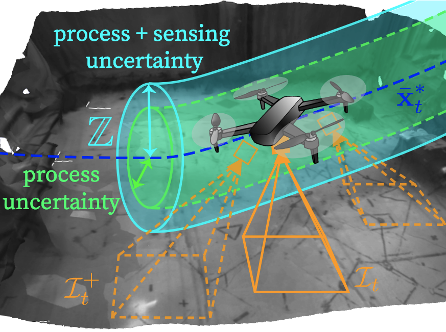
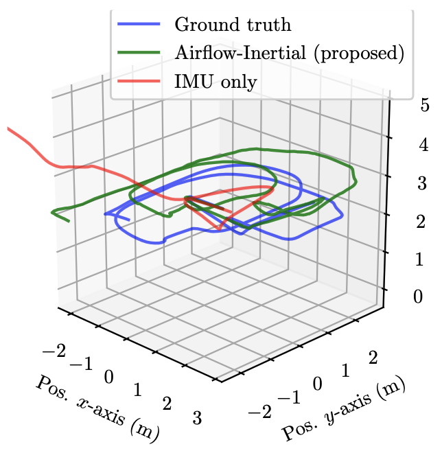
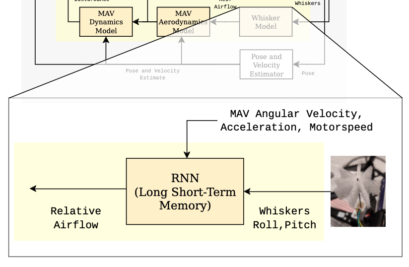

|
Andrea Tagliabue I am a PhD candidate in machine learning and robotics at LIDS at MIT, funded by the AFOSR NISC MURI. My research interests lie at the intersection of learning, sensing, and control for autonomous systems, with the objective of reducing the gap with living organisms in efficiency, agility and resilience. Before joining MIT, I spent one year as a robotics engineer affiliate at the NASA Jet Propulsion Laboratory and at Caltech, contributing to the JPL/Caltech/MIT team for the Darpa Subterranean Challenge. My focus was on state estimation, developing a lidar-inertial odometry algorithm. I completed a Master's degree in Robotics in 2018 at ETH Zürich, where I worked on multi-agent communication-less aerial manipulation as a research assistant in the Autonomous Systems Lab , and I was a member of the ETH team for the MBZ Int. Robotic Challenge. I was also visiting researcher at the HiPerLab at U.C. Berkeley, working on energy-efficient motion planning. I received a Bachelor with honours at Politecnico di Milano in 2015 studying Automation Engineering (EECS). |

|
Preprint |
|
|
Tube-NeRF: Efficient Imitation Learning of Visuomotor Policies from MPC using Tube-Guided Data Augmentation and NeRFs
Andrea Tagliabue, Jonathan P. How ArXiv preprint (under review for the Robotics and Automation Letters (RAL)) |
|
|
Efficient Deep Learning of Robust Policies from MPC using Imitation and Tube-Guided Data Augmentation
Andrea Tagliabue, Jonathan P. How ArXiv preprint (in preparation for Transactions on Robotics) |
|
Journal |
|
|
Nebula: Quest for robotic autonomy in challenging environments; team costar at the darpa subterranean challenge
Ali Agha, Kyohei Otsu, Benjamin Morrell, David D Fan, Rohan Thakker, Angel Santamaria-Navarro, Sung-Kyun Kim, Amanda Bouman, Xianmei Lei, Jeffrey Edlund, Muhammad Fadhil Ginting, Kamak Ebadi, Matthew Anderson, Torkom Pailevanian, Edward Terry, Michael Wolf, Andrea Tagliabue, et Al, 2022 Journal of Field Robotics [paper | videos | project webpage] |
|
|
Robust Collaborative Object Transportation Using Multiple MAVs
Andrea Tagliabue*, Mina Kamel*, Roland Siegwart, and Juan Nieto, The International Journal of Robotics Research 38 (9), 1020-1044 [paper | video | video teaser ] |
|
|
Model-free online motion adaptation for energy efficient flights of multicopters
Xiangyu Wu, Jun Zeng, Andrea Tagliabue, Mark W Mueller, 2022 IEEE Access |
|
Conference |
|
|
REAL: Resilience and Adaptation using Large Language Models on Autonomous Aerial Robots
Andrea Tagliabue*, Kota Kondo*, Tong Zhao*, Mason Peterson*, Claudius T Tewari, Jonathan P. How, Workshop on Language and Robot Learning, CoRL 2023 [paper] |
|
|
Efficient Deep Learning of Robust, Adaptive Policies using Tube MPC-Guided Data Augmentation
Tong Zhao*, Andrea Tagliabue*, Jonathan P. How, IROS, 2023 [paper] |
|
|
Robust, high-rate trajectory tracking on insect-scale soft-actuated aerial robots with deep-learned tube MPC
Andrea Tagliabue*, Yi-Hsuan Hsiao*, Urban Fasel, J Nathan Kutz, Steven L Brunton, YuFeng Chen, Jonathan P. How, ICRA, 2023 (Awarded Finalist for the Best Paper in Dynamics and Control) |
|
|  |
Output Feedback Tube MPC-Guided Data Augmentation for Robust, Efficient Sensorimotor Policy Learning
Andrea Tagliabue, Jonathan P. How IROS, 2023 |

|
Demonstration-Efficient Guided Policy Search via Imitation of Robust Tube MPC
Andrea Tagliabue, Dong-Ki Kim, Michael Everett, Jonathan P. How ICRA, 2022 |
|
Lion: Lidar-inertial observability-aware navigator for vision-denied environments
Andrea Tagliabue*, Jesus Tordesillas*, Xiaoyi Cai*, Angel Santamaria-Navarro, Jonathan P. How, Luca Carlone, Ali-akbar Agha-mohammadi International Symposium on Experimental Robotics, 2021 2022 (1st Place Urban Circuit, Darpa Subterranean Challenge) (* equally contributed) |
|
|  |
Airflow-Inertial Odometry for Resilient State Estimation on Multirotors
Andrea Tagliabue, Jonathan P. How ICRA, 2021 [paper] |
|
Autonomous MAV Landing on a Moving Platform with Estimation of Unknown Turbulent Wind Conditions
Aleix Paris, Andrea Tagliabue, Jonathan P. How AIAA Scitech 2021 Forum [paper] |
|
|  |
Touch the Wind: Simultaneous Airflow, Drag and Interaction Sensing on a Multirotor
Andrea Tagliabue*, Aleix Paris*, Suhan Kim, Regan Kubicek, Sarah Bergbreiter, Jonathan P. How IROS, 2020 (* equally contributed) |
|
Model-free Online Motion Adaptation for Optimal Range and Endurance of Multicopters
Andrea Tagliabue, Xiangyu Wu, Mark W. Mueller ICRA, 2019 [paper] |
|
|
Shapeshifter: A Multi-Agent, Multi-Modal Robotic Platform for the Exploration of Titan
Andrea Tagliabue, Stephanie Schneider, Marco Pavone, Ali-akbar Agha-mohammad 2020 IEEE Aerospace Conference [news | paper | short NASA video | long video] |
|
|
Rollocopter: An Energy-Aware Hybrid Aerial-Ground Mobility for Extreme Terrains
Sahand Sabet, Ali-Akbar Agha-Mohammadi, Andrea Tagliabue, D Sawyer Elliott, Parviz E Nikravesh 2019 IEEE Aerospace Conference [paper] |
|

|
Collaborative Transportation Using MAVs via Passive Force Control
Andrea Tagliabue, Mina Kamel, Roland Siegwart, and Juan Nieto ICRA, 2017 |